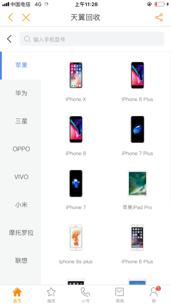
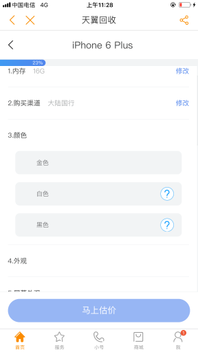
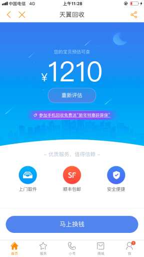
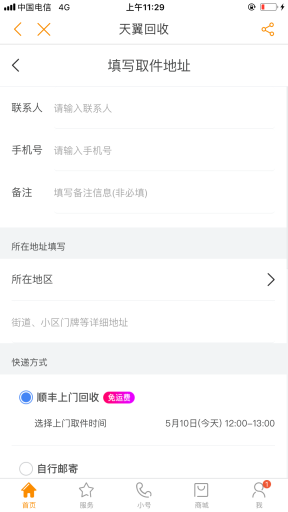

-
“天翼手机回收服务”是天翼电信终端有限公司为手机用户提供的手机回收服务平台，用户只需在线上下单，即可享受旧机估价、上门回收等服务，流程简介如下：
-
一、用户打开中国电信欢go客户端-天翼回收栏目或点击https://m-super.com/ty_wap/indexHappy.html?fm=9、微信“翼回收”小程序，按提示选择机型、手机状况等参数，可以快速看到旧机报价。用户下单要填写取件信息，旧机收款方式可支持支付宝或手机话费充值。
-
二、平台主动联系用户，派单顺丰上门取件，平台承担邮费。天翼售后服务中心进行手机的评估项的核实，核实一致，到货后的2个工作日内进行旧机款的发放，如果核实不一致，则由售后服务中心客服致电客户进行最终的协商。
三、用户查询：用户可以通过https://m-super.com/ty_wap/indexHappy.html?fm=9或欢go客户端天翼回收栏目，均可以输入下单的手机号码查询回收订单的状态。统一客服热线：0571-87162535，4008110299服务号。
Q：天翼回收服务是否有标准？
A：有标准的估价模式和估价流程，用户选择相应机型以及机型的状态，即时看到估价结果。服务也有标准流程，包括顺丰上门取件和物流到付、验机、打款等服务内容
Q：天翼回收操作步骤截图：登录欢go客户端或https://m-super.com/ty_wap/indexHappy.html?fm=9
用户关心的其它问题
- 
- 
- 
- 